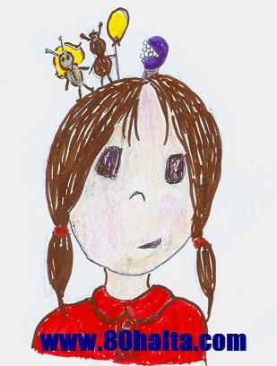

ئەسسالامۇ ئەلەيكۇم مۆھتىرەم تورداش، بلوگىمىزغا خۇش كەپسىز، قۇتلۇق قەدەملىرىڭىزگە مەرھابا!
 يالغان ھامىلدارلىق ھەققىدە
يالغان ھامىلدارلىق ھەققىدە
ئاپتورى:Birzat ۋاقتى:2013-03-11
 80خالتا بلوگىنىڭ ئوقۇرمەنلىرىدىن بولغان بىر خانىم ياۋرۇپا ئەللىرىنىڭ بىرىدىن تېلفۇن قىلىپ كاللىسىدىن ئۆتمىگەن بىر ئىش توغرىسىدا مەندىن مەسلەھەت سورىدى. بۇ خانىمنىڭ ئېيتىشىچە تۇنجى پەرزەنتىگە قورساق كۆتۈرگەن ۋاقىتتىكىگە ئوخشاش بۇ قېتىممۇ ھەيز توختاش، سېزىك ئالامەتلىرى كۆرۈلۈش بولۇپ قورساقتا ھامىلدارلىقنىڭ باشلىنىشىدا بولىدىغان ئالامەتلەر ئاساسەن دېگۈدەك كۆرۈلگەندىن كىيىن سۈيدۈك تەكشۈرتۈپ كۆرسە ھامىلدارلىق بەلگىسى كۆرۈلمىگەن، بۇ قانداق ئىشتۇ دەپ دوختۇرغا كۆرۈنگەندە دوختۇرمۇ تەكشۈرۈپ ھامىلدار ئەمەسلىكىنى ئېيتقان. يولدىشىمۇ، سىز پەرزەنتكە ئامراق بولغاچقا كاللىڭىزغا كىرىۋىلىپ سىزدە شۇنداق خاتا سېزىم بولغان گەپ دەپتۇ.بۇ خانىم ئۆزىنى قورساق كۆتۈردۈم دەپ قارىغان بولسىمۇ ئۆزىنىڭ ھامىلدار ئىكەنلىكىگە ھېچكىمنى ئىشەندۈرەلمىگەن. شاگىرت چاغلىرىمدا بۇ ھەقتە ...
80خالتا بلوگىنىڭ ئوقۇرمەنلىرىدىن بولغان بىر خانىم ياۋرۇپا ئەللىرىنىڭ بىرىدىن تېلفۇن قىلىپ كاللىسىدىن ئۆتمىگەن بىر ئىش توغرىسىدا مەندىن مەسلەھەت سورىدى. بۇ خانىمنىڭ ئېيتىشىچە تۇنجى پەرزەنتىگە قورساق كۆتۈرگەن ۋاقىتتىكىگە ئوخشاش بۇ قېتىممۇ ھەيز توختاش، سېزىك ئالامەتلىرى كۆرۈلۈش بولۇپ قورساقتا ھامىلدارلىقنىڭ باشلىنىشىدا بولىدىغان ئالامەتلەر ئاساسەن دېگۈدەك كۆرۈلگەندىن كىيىن سۈيدۈك تەكشۈرتۈپ كۆرسە ھامىلدارلىق بەلگىسى كۆرۈلمىگەن، بۇ قانداق ئىشتۇ دەپ دوختۇرغا كۆرۈنگەندە دوختۇرمۇ تەكشۈرۈپ ھامىلدار ئەمەسلىكىنى ئېيتقان. يولدىشىمۇ، سىز پەرزەنتكە ئامراق بولغاچقا كاللىڭىزغا كىرىۋىلىپ سىزدە شۇنداق خاتا سېزىم بولغان گەپ دەپتۇ.بۇ خانىم ئۆزىنى قورساق كۆتۈردۈم دەپ قارىغان بولسىمۇ ئۆزىنىڭ ھامىلدار ئىكەنلىكىگە ھېچكىمنى ئىشەندۈرەلمىگەن. شاگىرت چاغلىرىمدا بۇ ھەقتە ...
ھامىلدارلىقتىن ساقلىنىش دورىسىنىڭ قانداق زىيانلىرى بار؟
ئاپتورى:Birzat ۋاقتى:2011-12-17
ھامىلدارلىقتىن ساقلىنىش دورىسى باشقا ھامىلدارلىقتىن ساقلىنىش ئۇسۇللىرىدىن كۆپ قولايلىق، شۇڭا نۇرغۇن ئاياللار ھامىلدارلىقتىن ساقلىنىش دورىسىنى يېيىش تەدبىرىنى قوللىنىدۇ، ئەمما قايسىلا خىلدىكى ھامىلدارلىقتىن ساقلىنىش دورىسىنى ئىشلەتسۇن، ئاياللارنىڭ تەن سالامەتلىكىگە بەلگىلىك دەرىجىدە تەسىر يەتكۈزىدۇ، ئۇنداقتا ھامىلىدارلىقتىن ساقلىنىش دورىسىنىڭ قانداق زىيانلىرى بار؟
ھامىلدارلىقتىن ساقلىنىش دورىسىنىڭ زىيانلىرى.....
خەتكۈش: ھامىلىدار، دورا، قىز ھامىلە
ئانىلىق ھورمۇن ئۆزگۈرۈشىنىڭ ئاياللارنىڭ ساغلاملىقىغا كۆرسىتىدىغان تەسى
ئاپتورى:Birzat ۋاقتى:2011-11-04
ئاياللار ئۆمۈرىدە ھەيز ، ھامىلدارلىق ، تۇغۇت، ھەيز توختاش مەزگىلىدىن ئىبارەت ئوخشىمىغان فىزلوگىيىلىك دەۋرلەرنى باشتىن كەچۈرىدۇ.

ھەيز ئاغرىتىپ كېلىش بىلەن ھامىلدارلىق بولالماسلىقنىڭ مۇناسىۋىتى
ئاپتورى:Birzat ۋاقتى:2011-10-30
خەتكۈش: ھەيز ئاغرىتىپ كىلىش ھامىلدارلىق
ئاغرىتماي ھامىلە چۈشۈرۈشنىڭ زىيىنى
ئاپتورى:Birzat ۋاقتى:2011-10-28

نۆۋەتتە تېلىۋىزور ۋە رادىئولاردا ئاغرىتماي ھامىلە چۈشۈرۈش ھەققىدىكى ئېلان تەشۋىقات شامىلى خېلىلا ئەۋج ئېلىپ قالدى.ئېلاننى كۆرگەن، ئاڭلىغان كىشىگە بۇ ئىش تولىمۇ ئاددى ھەم غەم-قايغۇسىز ئىشتەك تۇيغۇ بېرىدۇ. ئۇنداقتا ئاغرىتماي ھامىلە چۈشۈرۈش راستلا شۇنداق ئاسان، غەم قايغۇسىز،ھىچقانداق خىيىم-خەتىرى ھەم زىيىنى يوق ئىشمۇ؟ ئەمىلىيەتتە ھەرگىز ئۇنداق ئەمەس، ئۇنداقتا ئاغرىتماي ھامىلە چۈشۈرۈشنىڭ زادى قانداق زىيانلىق تەرەپلىرى بار كۆرۈپ باقايلى:
خەتكۈش: ھامىلە
توي كېچىسى ئالدىدىكى قىزغا ئانىنىڭ ئېيتىدىغانلىرى
ئاپتورى:Birzat ۋاقتى:2011-10-25
بۇ كېچە ھەققىدە ھەر كىملەر تۈرلۈك ۋەھىمىلىك سۆزلەرنى ئېيتىشىدۇ. گويا قىزلىق پەردىنىڭ ئىلىنىشىدا دەھشەتلىك ئاغرىق بولارمىش. توغرا، قىزلىقتىن جۇۋانلىققا ئۆتۈشتە بىر ئاز ئاغرىق بولىشى مومكىن. ئەگەر گەۋدىنى ئەركىن تۇتمىسىڭىز، ناتوغرا ھەركەتلەر بىلەن ئەرگە قاتتىق قارشىلىق قىلسىڭىز، جىنسىي يول مۇسكۇللىرىنىڭ قىسقىرىشى قىيىنلىشىدۇ، ئەنە شۇنىڭدا ئاغرىق بولىدۇ. قىزىم، ئالدىڭىزدا تۇرغان ئادەم يات ئەمەس، ئۆمۈرلۈك يولدىشىڭىز، ئىشەنسىڭىز، سۆيسىڭىز ئەرزىيدىغان ئادەم ئىكەنلىكىنى، ئاتا-ئانىڭىز سىزنى ئۇنىڭغا ئىشىنىپ تاپشۇرغانلىقىنى ئەسلەپ ئۆزىڭىزنى توغرا تۇتۇپ ماسلىشىپ بەرسىڭىز بۇ نازۇك مۇناسىۋت سىزگە لەززەت ئىلىپ كىلىدۇ. كىيىنكى ئۇچرىشىشلارنى ھاياجان بىلەن كۈتىدىغان بولىسىز.
ئانا سۈتى ھەققىدە
ئاپتورى:Birzat ۋاقتى:2011-05-08

80خالتا بلوگ ئىلاۋىسى: ئانا سۈتى - ئىنسانىيەت ھالال رېسىقلىرىنىڭ ئىچىدىكى تۇنجىسى ۋە ئەڭ كاتتىسىدۇر. بوۋاقنىڭ ساغلام يېتىلىشى، ئەقلىي قابىلىيىتى، چوڭ مېڭە تەرەققىياتى، كۆرۈش قۇۋۋىتى، ئىممۇنىتېت ئىقتىدارى، ماددا ئالماشتۇرۇش ئىقتىدارى قاتارلىقلاردا ئانا سۈتى موھىم رول ئوينايدۇ. بالىنىڭ ئانا قارنىدا تۇرۇش ۋاقتى توشۇپ يورۇق ئالەمگە كۆز ئاچقاندىن كىيىن ئانا كۆكسىدە سۈت پەيدا بولۇشىنى ئاللاھنىڭ ئىنسانلارغا ئاتا قىلغان مۆجىزىلەرچە كاتتا نىئمىتى دېيىشكە بولىدۇ. ئانا ھامىلىدار بولغان پەيتتە ئەمچەك سۈت ئاجرىتىش تەييارلىق ھالىتىدە بولۇپ بالياتقۇ بىلەن بوۋاقنى تۇتاشتۇرۇپ تۇرغۇچى بالا ھەمرىيى ھاسىل قىلغان ئاياللىق ھورمۇن ئەمچەكتىكى سۈت ئىشلىگۈچى سىستېمىنى غېدىقلاپ، ئۇنىڭ پىشىپ يېتىلىشىنى ئىلگىرى سۈرىدۇ. بوۋاقنىڭ دۇنياغا كۆز ئىچىشى بىلەنلا ئانا تېنىدىكى قاننىڭ سۈتكە ئايلىنىش جەريانى كىشى ئەقلىنى ھەيرەتتە قالدۇرىدۇ.
ھامىلدار ئاياللار كومپيۇتېردىن يىراق تۇرۇڭ!!
ئاپتورى:Birzat ۋاقتى:2011-03-23
 كومپيۇتېر ئېكرانى ھاسىل قىلغان ئېلېكتىر ماگنىت مەيدانى ھۆجەيرە پەردىسىدىكى سىتوپلازىمىنىڭ كۆپىيىشى ۋە ماددا ئالماشتۇرۇشقا توسقۇنلىق قىلىپ ھامىلىنىڭ نورمال يېتىلىشىگە تەسىر يەتكۈزىدۇ. شۇڭا، كومپيۇتېرنى ئۇزاق مەزگىل ئىشلەتكەن ھامىلدار ئاياللارنىڭ بويىدىن ئاجىراپ كېتىش نىسبىتى يۇقۇرى بولىدۇ.
كومپيۇتېر ئېكرانى ھاسىل قىلغان ئېلېكتىر ماگنىت مەيدانى ھۆجەيرە پەردىسىدىكى سىتوپلازىمىنىڭ كۆپىيىشى ۋە ماددا ئالماشتۇرۇشقا توسقۇنلىق قىلىپ ھامىلىنىڭ نورمال يېتىلىشىگە تەسىر يەتكۈزىدۇ. شۇڭا، كومپيۇتېرنى ئۇزاق مەزگىل ئىشلەتكەن ھامىلدار ئاياللارنىڭ بويىدىن ئاجىراپ كېتىش نىسبىتى يۇقۇرى بولىدۇ.
ئۇنىڭدىن باشقا، ئۇزاق ۋاقىت كومپيۇتېرنىڭ ئالدىدا ئولتۇرغان ھامىلدار ئاياللارنىڭ
خەتكۈش: ھامىلدار
ھامىلدار ئاياللارنىڭ بۆرىكىدىكى سۇغا قانداق چارە قىلىنىدۇ؟
ئاپتورى:Birzat ۋاقتى:2011-03-23

ئايالىم قورساق كۆتۈرگىلى 6 ئايچە بولۇپ قالغان ئىدى . بېلى تولا ئاغرىپ تەكشۈرتسەك ، بىر بۆرىكىدە سۇ بار دىگەن دىئاگنوزنى قويدى . ھامىلدار بولغانلىقى ئۈچۈن ھىچقانداق ئامال قىلالمايمىز دەيدۇ . بىراق ئەنسىرەيدىغىنىم بالا تۇغۇلۇپ ، ئايالىم تۇغۇتتىن قوپۇپ بولغىچە بۇ كېسەل بەكلا ئېغىرلىشىپ كىتەرمۇ ؟ بۇنىڭ ئالدىنى ئالغىلى پەقەتلا بولماسمۇ ؟ بۇ توغرۇلۇق بېشىم بەكلا قېتىپ كەتكەچكە سىزدىن مەسلىھەت ئېلىشنى لايىق كۆردۈم . رەھمەت !
باش پىتلاپ كېتىشنىڭ چارىسى نېمىدۇ؟
ئاپتورى:Birzat ۋاقتى:2011-02-25
ئەسسالامۇ ئەلەيكۇم مۆھتىرەم بىرزات ئەپەندىم. تولىمۇ خىجالەتتە مېنى قىيناپ بىئارام قىلىۋاتقان بىر ئىش توغۇرلۇق ئۆزلىرىدىن مەسلەھەت سوراي دەپ كومپيۇتېر ئالدىدا ئولتۇرۇپتىمەن. بۇ گەپنى ئۆز ئانىسىدىن باشقا بىر كىمگە ئېيتماق ھەقىقەتەن تەس ئىكەن. ئەيىپكە بۇيرىماي ماڭا بىر يول كۆرسەتكەيلا. تازىلىققا شۇنداق دېققەت قىلىمەن بولمىسا، يەنە نېمە ئۈچۈندۇر بېشىم تولا قىچىشىپ بەك قىينىۋەتتى، ئىشلىتىۋاتقان چاچ سوپۇنلىرىم خىل كەلمىگەن ئوخشايدۇ دەپ قىممەت باھالىق سوپۇنلارنى ئىلىپ ئىشلىتىپ باقتىم، يەنىلا ئوخشاش، بىر قېتىم ماڭلىيىمدا ئىنتايىن كىچىك بىر ھاشارەت ماڭغاندەك بولىۋدى ئاستا ئىلىپ قاراپ باقتىم، ئۆمرۈمدە كۆرۈپمۇ باقمىغان بىر مەخلۇق ئىكەن. مىجىپ ئۆلتۈرۋېتەي دېسەم ھېچ ئۆلىدىغاندەك ئەمەس. شۇنىڭ بىلەن چوڭلارنىڭ پىت ھەققىدىكى گەپلىرى ئېسىمگە كىلىپ ئانامغا تېلفۇن قىلىپ ئەھۋالنى ئېيتسام دېگەندەك شۇ پىت ئىكەن. ئاناممۇ بۇنىڭ چارىسىنى بىلمەيدىكەن.ئاناممۇ پىت دېگەننى قىز بالا ۋاقىتلىرىدا كۆرۈپتىكەن.
خەتكۈش: پىت
ھەسەل ۋە ئۇنىڭ تېرىنى گۈزەللەشتۈرۈشتىكى ئالاھىدە خۇسۇسىيەتلىرى
ئاپتورى:Birzat ۋاقتى:2011-02-23
80خالتا دۇكىنى سىزگە ھەسەل ئىستىمال قىلغاندا شۇنى سەمىڭىزگە سالىدۇ:
ساپ ھەسەل ئىستىمال قىلغاندا ھەسەلنى يۇقۇرى تېمپىراتۇرىدىكى قايناق سۇدا ئېرىتىپ ئىچسىڭىز ھەسەل تەركىبىدىكى نازۇك ئىلمېنت ۋە ئوزۇقلۇقلار زىيانغا ئۇچرايدۇ. ھەسەل چاينىڭ رەڭگى ، پۇرىقى ئۆزگىرىپ كېتىدۇ. شۇڭا ھەسەلنى سوۋۇتۇلغان ئىلمان قايناق سۇدا ئېرىتىپ ياكى نان بىلەن مىلەپ يېسىڭىز ئەڭ ياخشى ئۈنۈمگە ئېرىشەلەيسىز.
ئەگەر 10يىلدىن كىيىن كۆپ پۇل خەجلەپ تېرە تارتىش ئوپراتسىيەسى قىلدۇرماي ھەم گۈزەللەشتۈرۈش ئوكۇلى ئۇردۇرماي دېسىڭىز ئۇنداقتا ھازىردىن باشلاپ ھەر كۈنى ئەتتىگەندە بىر ئىستاكان سوۋۇتۇلغان قايناقسۇغا لىق بىر قوشۇق ھەسەل سىلىپ ئىرىتىپ ئاچ قورساققا ئىچىپ بىرىڭ، مۇشۇنداق قىلغاندا جىگەرنىڭ زەھەر قايتۇرۇش ئىقتىدارنى كۈچەيتىپ، قەۋزىيەتنى راۋانلاشتۇرۇپ بەدەننى تازىلاپ داغلارنى يوقۇتۇپ يۈز تېرىسىنى ئاق ۋە يۇمۇران قىلغىلى بولىدۇ.
قەدىمكى كىشىلەرنىڭ ھەسەلنىڭ ئوزۇقلۇق ھەم شىپاسىغا بولغان قارىشى يۈكسەك بولۇپ قەدىمكى گېرتسىيەلىكلەرھەسەلنى<<تەڭرىنىڭ بەندىلىرىگە ئاتا قىلغان كاتتا سوۋغىسى>> دەپ قارىغان بولسا قەدىمكى ھىندىستانلىقلار<<ھەسەل ئىچىش ئۆمۈرنى ئۇزارتىدۇ>> دەپ قارىغان. دېمەككى ھەسەل دۇنيادىكى بارچە ئىنسانلارغا تونۇشلۇق بولغان، ھەر قانداق يۇرت- ئىقلىملاردا، ھەر خىل ياشتىكى قىرى-ياش، بالىلار، ھەر-ئاياللارنىڭ ئورتاق ئىستىمال قىلىشىغا ماس كىلىدىغان ئوزۇقلۇق بىلەن ساقلىقنى ساقلايدىغان ئەڭ ئېسىل يىمەكلىكتۇر. ھەسەلنىڭ تېببى داۋالاش ۋە ساقلىقنى ساقلاشتىكى ئالاھىدە خۇسۇسىيەتلىرى ھەققىدە <<80خالتا بلوگى>> مىزدا ئىلگىرى توختالغان ئىدۇق. بۇ قېتىم ھەسەلنىڭ خاس چىراي گۈزەللەشتۈرۈش ئۈنۈمى ۋە ئۇنىڭ ئىلمى ئاساسى ھەققىدە قىز-چوكانلارنى مول ئۇچۇرلار بىلەن تەمىن ئىتىشكە تىرىشىمىز. چىرايلىق بولۇپ نېمە كەپتۇ دەيدىغانلار بۇ تېمىنى ئوقۇماڭ!
قاپارتقۇلاردىن سالامەتلىككە نەزەر
ئاپتورى:Birzat ۋاقتى:2011-01-28

ئادەتتە يۈزىمىزگە ھەرخىل قاپارتقۇلار چىقىپ قالىدۇ. بۇ چىققان نەرسىلەر بەدەندىكى ھەرقايسى ئورگانلارنىڭ فۇنكىسىيەلىرى بىلەن مۇناسىۋەتلىك. قاپارتقۇلارنىڭ چىققان ئورنىغا قاراپ سالامەتلىك ئەھۋالىڭىزنى بىلىۋېلىڭ:
1. ئېڭەكنىڭ ئاستى تەرىپىگە چىقسا:
خەتكۈش: دانىخورەك
ئاياللار ھامىلدارلىقنىڭ ئاخىرىقى مەزگىللىرىدە دېققەت قىلىشقا تىگىشلىك
ئاپتورى:Birzat ۋاقتى:2010-12-31
 ھامىلدارلىقنىڭ ئاخىرقى مەزگىلىگە بارغاندا، ھامىلدار ئاياللار بارلىق جاپا-مۇشەققەتنى ئاخىرلاشتۇرۇپ، يېڭى ھاياتلىقنى كۈتىۋېلىش تەييارلىقىغا چۈشىدۇ. ھامىلدارلىق مەزگىلىدىكى تۈرلۈك بىئارامسىزلىق بۇ مەزگىلدە تېخىمۇ ئېغىرلىشىشى مۇمكىن. شۇڭا كۆڭلىنى ئەركىن-ئازادە تۇتۇش كېرەك. مۇشۇ مەزگىلدىن ئۆتسىلا، تۇنجى ئانا بولۇش خۇشاللىقىدىن بەھرىمان بولىدۇ.
ھامىلدارلىقنىڭ ئاخىرقى مەزگىلىگە بارغاندا، ھامىلدار ئاياللار بارلىق جاپا-مۇشەققەتنى ئاخىرلاشتۇرۇپ، يېڭى ھاياتلىقنى كۈتىۋېلىش تەييارلىقىغا چۈشىدۇ. ھامىلدارلىق مەزگىلىدىكى تۈرلۈك بىئارامسىزلىق بۇ مەزگىلدە تېخىمۇ ئېغىرلىشىشى مۇمكىن. شۇڭا كۆڭلىنى ئەركىن-ئازادە تۇتۇش كېرەك. مۇشۇ مەزگىلدىن ئۆتسىلا، تۇنجى ئانا بولۇش خۇشاللىقىدىن بەھرىمان بولىدۇ.
ئۇزۇنغا سوزۇلغان ھامىلدارلىق مەزگىلىدە ئانىنىڭ بەدىنى شەكىل ۋە ئىقتىدارى ئۆزگىرىش جەريانىنى باشتىن كەچۈرىدۇ. بەزى ئۆزگىرىشلەر ھامىلدارلىقنىڭ دەسلەپكى مەزگىلىدىن تۇغۇشقىچە داۋاملىشىدۇ. بەزىلىرى ھامىلدارلىق ۋاقتىنىڭ ئېشىشىغا ئەگىشىپ تېخىمۇ روشەنلىشىدۇ. مەسىلەن: بالىياتقۇ ھامىلدارلىق مەزگىلىنىڭ ئاخىرىدا تېز يوغىناپ، تۈرلۈك سىيىش ئالامىتىنى كەلتۈرۈپ چىقىرىدۇ.
ئۇنىڭدىن باشقا بەزى ئالامەتلەر ھامىلدارلىقنىڭ ئاخىرقى مەزگىلىدە تەدرىجى پەيدا بولىدۇ. تۆۋەندە بىز ھامىلدارلىقنىڭ ئاخىرقى مەزگىلىدە دائىم كۆرىلىدىغان مەسىلىلەرنى تونۇشتۇرۇپ ئۆتىمىز.
خەتكۈش: ھامىلدار
ئاياللارنىڭ ئۇزۇن ئۆمۈر كۆرۈشىدىكى سىرلار
ئاپتورى:Birzat ۋاقتى:2010-12-02

<ئۆزىنى ئىزدەش بوسۇغىسىدا> دىن ئاياللارنىڭ ساپاسى ھەققىدىكى تەھلىللەر
ئاپتورى:Birzat ۋاقتى:2010-10-09

شۇ قەدەر ئالدىراش بولغان ياپون ئاياللىرى تۈرلۈك خالىس ئىشلارنى قىلىشقا ۋاقىت چىقىراتتى، ئۇلار بىر يەرگە جەم بولۇپ ، تاماق ئىتىشنى ئۆگىنەتتى، پىرەنىك پۇشۇراتتى، مەنمۇ ئۇلارغا لاغمەن ۋە پولۇ ئېتىش ئۇسۇللىرىنى ئۆگەتتىم. دوستلار ئۇچرىشىشلىرىدا ئۇلار قۇرۇق پاراڭ سېلىشنىڭ ئورنىغا ئۆز-ئارا بالا تەربىيلەش تەجرىبىلىرىنى ئالماشتۇراتتى.......مەن ياپون ئاياللىرىنىڭ ئاشۇ خىل پائالىيەتلىرىگە قاتناشقىنىمدا ، تەبىئىي ھالدا ئۇيغۇر ئاياللىرىنىڭ قاتار چايلىرىنى ئەسلەپ قالاتتىم ، سېمىرىپ تىقىلىپ كەتكەن ئاياللار چۇۋالچاق گەپلەرنى دىيىشىپ ، تالاي ۋاقىتنى ئۆتكۈزىۋېتەتتى، ئۈستەلگە تۈرلۈك قورۇمىلار دۆۋىلەپ تىزىلغان ، سېمىز ئاياللار خۇددى ئولجىغا ئېرىشكەن ۋەھشىي گۆشخور ھايۋانلاردەك قورىمىلارنى يالماپ- يالماپ يىيىشىدۇ. ئۇلار ئۆيلىرىگە بىر قانچە تېتىقسىز يۇمۇردىن باشقا ھىچنىمە ئۆگىنەلمەي قايتىشىدۇ.
خەتكۈش: ئايال
ھامىلدارلىقتىن ساقلىنىشنىڭ قانداق ئۈنۈملۈك چارىسى بار؟
ئاپتورى:Birzat ۋاقتى:2010-10-07

ھامىلدارلىقتىن ساقلىنىشتا ئۈزۈك سالدۇرسا ئاياللار كېسەلچان بولۇپ قالىدىكەن دەپ تولا ئاڭلايمەن، ھامىلدارلىقتىن ساقلىنىشتا ئۈزۈك سالدۇرۇشتىن باشقا ئۈنۈملۈكرەك چارە بارمىدۇ؟
ئالدىدا سىلىنىڭ يازغان ماقالىلىرىنى كۆرگەن ئىدىم، ئۇنىڭدا ھەيز كۆرگەن كۈندىن باشلاپ 11-16 كۈنلىرى جىنسىي مۇناسىۋەتتىن ساقلانسا ھامىلدار بولۇش نېسبىتى تۆۋەن بولىدۇ دەپتىكەنلا،،، مۇشۇ ھەقتە ئىنىقراق چۈشەنچە بەرگەن بولسىلا بوپتىكەن!
خەتكۈش: ھامىلىدار
ئۇيغۇر تېبابىتىدە تۇخۇمداننى ئاسراش تەدبىرلىرى
ئاپتورى:Birzat ۋاقتى:2010-10-04
80خالتا بلوگ ئىزاھاتى:
تۇخۇمدان : ئۇيغۇر تىلىنىڭ ئىزاھلىق لۇغىتى
ئى [پ]
① <بىئول> ئاياللارنىڭ ۋە چىشى ھايۋانلارنىڭ كۆپىيىش بېزى . ئادەملەرنىڭ تۇخۇمدېنى قورساق بوشلۇقىنىڭ ئاستىنقى قىسمىدىكى داس سۆڭىكىنىڭ ئىچكى تەرىپىگە جايلاشقان بولىدۇ . <
②دېھ> مۇخلار ، پاپورتنىكلار ۋە يالىڭاچ ئۇرۇقلۇق ئۆسۈملۈكلەرنىڭ ئانىلىق كۆپىيىش ئەزاسى . كۆپ ھۈجەيرىدىن تۈزۈلىدۇ ، شەكلى بوتۇلكىغا ئوخشايدۇ ، قورساق قىسمى ۋە بويۇن قىسمى دەپ ئىككى قىسىمغا بۆلۈنىدۇ . قورساق قىسمىدا بىر دانە تۇخۇم ھۈجەيرىسى بولىدۇ
بالىياتقۇغا زىيانلىق ئامىللار ۋە ئۇنى ئاسىراش چارىلىرى
ئاپتورى:Birzat ۋاقتى:2010-10-04
1. ھەددىدىن زىيادە سوغۇق مۇھىت ۋە سوغۇق يېمەك -ئىچمەكلەر، لازا، ئاچچىقسۇ، كالا گۆشى قاتارلىقلار زىيانلىق. بەل ۋە تۆۋەنكى مۈچە، ئەۋرەت قىسىملىرىنى ئىسسىق ساقلىماسلىق، ئۇزۇن مۇددەت سۇ بىلەن مۇناسىۋەتلىك خىزمەت قىلىش، يالاڭ كىيىنىش، سوغۇق سۇدا يۇيۇنۇش قاتارلىقلار بالىياتقۇ ھۆللۈكىنى ئارتتۇرۇۋېتىپ، ئاق خۇن كۆپىيىپ، ئاسانلا ياللۇغلىنىشنى كەلتۇرۇپ چىقىرىدۇ.
2. يەرلىك ئورۇن تازلىقىنى ياخشى ئىشلىمەسلىك، بولۇپمۇ ھەيز مەزگىلىدە ۋە جىنسىي مۇناسىۋەتتىن كىيىن يەرلىك ئورۇننى يۇيۇپ تۇرماسلىق، سۈپىتى ناچار تازلىق قەغەزلىرىنى ئىشلىتىش، قەغەزنى پات-پات ئالماشتۇرۇپ تۇرماسلىق، ئىچ كىيىملەرنى ۋاقتىدا يۇيۇپ پاكىز كىيمەسلىك قاتارلىق مىكرو جاراسىملارنىڭ كۆپىيىشىنى ئىلگىرى سۈرۈپ، ئاسانلا كېسەللىك پەيدا قىلىدۇ.
3. قالايمىقان جىنسىي مۇناسىۋەت قىلىش، كۆپ تۇغۇش، كۆپ قىردۇرۇش، بالدۇر توي قىلىش، تۇغۇت مەزگىلىدە تازىلىقنىڭ ياخشى بولماسلىقى، مىكروبلىبىش قاتارلىق ئامىللارمۇ بالياتقۇغا زىيانلىق ئامىللار بولۇپ، بالياتقۇنىڭ زەخمىلىنىشى، ياللۇغى ئېغىر بولغانلىرىدا راكنى كەلتۈرۈپ چىقىرىدۇ. كۆپ قىردۇرۇش سەۋەبىدىن بالياتقۇنىڭ قىسقىرىشى ئەسلىگە كەلمەي خۇن توختىماسلىق كېلىپ چىقىدۇ.
بۇ ھەقتىكى تولۇق تەپسىلاتىنى كۆرمەكچى بولسىڭىز <<تەپسىلاتى>> نى چىكىڭ!
خەتكۈش: بالىياتقۇ، ئاياللار
ئاياللار ساغلاملىقى قانداق ئەمەلگە ئاشىدۇ؟
ئاپتورى:Birzat ۋاقتى:2010-10-03
بۇ ئىنتايىن چوڭ ھەم كەڭ دائىرىلىك تېما بولۇپ بىرەر پارچە كىتاب ياكى تۇرمۇش مەسلەھەتچىسى دېگەندەك پارچە يازمىلار بىلەن ھەل بولۇپ كېتىدىغان مەسىلىمۇ ئەمەس. شۇنداق بولسىمۇ بىلگەننى ئەلدىن ئايىماسلىق قارىشى بويىچە ئاز تولا پىكىر بايان قىلىپ باقماقچىمەن.
ئاياللارنىڭ ساغلام بولىشى ئومومىي مىللەتنىڭ تەن ساغلاملىقى ۋە روھىي كەيپىياتلىرىغا تەسىر كۆرسىتىدىغان موھىم ئامىللارنىڭ بىرسى بولۇپ ئەر-ئايال ھەر ئىككىلىسى سەل قاراشقا بولمايدىغان موھىم نۇقتا. كۈنىمىزدە ئاياللارنىڭ قاچانلا قارىسا ئاياللىق جىنسقا تەۋە <<ئۇششاق-چۈششەك كېسەل>>لەردىن خالىي بولالماي ۋايساپلا ئۆتۈشى ئومومىي يۈزلۈك مەسىلە بولۇپ قالدى. بۇ يەردە سۈت بېزى راكى، بالياتقۇ راكى دېگەندەك جانغا تاقىشىدىغان ئېغىر كېسەللىكلەرنىڭ گېپىنى قىلمىغان ھالەتتىمۇ ئادەتتىكىچە دەپ قارالغان كېسەللىكلەردىن خىلى ئۇزۇن داۋالىنىپمۇ ئۈزۈل-كېسىل ساقىيىپ بولالماسلىق، كېسەللىك ساقىيىپ بولغاندىن كىيىن يەنە قايتا قوزغۇلۇش، تەكرار داۋالىنىش دېگەندەكلەر ئاياللارنىڭ ئۆزىگە، يولدىشىغا، بالىلىرىغا ئاجرىتىدىغان نۇرغۇنلىغان قىممەتلىك ۋاقتىنى، ئىقتىسادىنى توغرىسى ياشلىقىنى زايە قىلىۋەتتى. مېنىڭ ھېس قىلىشىمچە ئاياللار ئۈچۈن ياخشى داۋالىيالايدىغان دوختۇر ياكى داڭلىق دورا ۋە ساغلاملىق مەھسۇلاتلىرىدىنمۇ بەكرەك ئۆزىنى ئاسىراش ھەققىدە توغرا جىنسىي تۇرمۇش قارىشى، مىزاجغا مۇۋاپىق ئوزۇقلىنىش ئادىتى، تازىلىق مەسىلىلىرى(بولۇپمۇ ھەيز قەغىزىنىڭ سۈپەتلىك بولۇشى) دېگەنلەرگە مۇناسىۋەتلىك بىلىم ۋە ئۇچۇرلاردىن خەۋەردار بولۇش شۇ كېسەللەرنىڭ ئالدىنى ئىلىش، ساغلاملىقىنى ئاسراشنىڭ تۇنجى قەدەمدىكى ئاقىلانە ئۇسۇلىدۇر.
تۆۋەندە ئاياللارنىڭ جىنسىي يولىغا زىيانلىق ئامىللار ۋە ئۇنى ئاسىراش چارىلىرى ھەققىدىكى مەزمۇن دىققىتىڭىزدە بولىدۇ. كەم قالغان جايلىرىغا نىسبەتەن تولۇقلىما ۋە تەكلىپ -پىكىر بىرىشىڭىزلارنى تۆۋەنچىلىك بىلەن سورايمەن.
خەتكۈش: ئاياللار
كوت-كوت ئاياللار ئائىلىسىنى قانداق قوغداپ قىلىشى كېرەك؟
ئاپتورى:Birzat ۋاقتى:2010-09-22
بۇرۇنقى زاماندا بىر جۈپ ئەر-ئايال ئۆتكەنىكەن.ئۇلار ئۆي تۇتقىلى 20 يىلدىن ئاشقان بولسىمۇ،لىكىن بۇ ئۆيدە ئۇرۇش-تالاش،جېدەل-ماجرا قۇرىماپتۇ. سەۋەبى بۇ ئۆيدە ئەر كىشىنىڭ ئاچچىقى يامان،تەرسا ئىكەن، ئايال كىشى بولسا ئاغزى يامان،شۇپۇر ئېغىز ئىكەن. شۇڭلاشقىمۇ ئايال كوت-كوت، شۇپۇر ئېغىزلىقىدىن ئېرىدىن تولا تاياق يەيدىكەن.
يىللارنىڭ ئۆتىشى بىلەن ئايال ئېرىنىڭ زۇلىمىغا چىدىماي ئاخىرى ئاجرىشىش نىيتىگە كېلىپ قازىنىڭ قېشىغا بېرىپتۇ. قازى ئايالنىڭ كىلىشتىكى مۇددىئاسىنى سوراپ ئەھۋالنى بىلىپتۇ. قازى بۇ ئەر خۇتۇننىڭ 3 بالىسى بارلىقىنى بىلگەندىن كېيىن ئۇلارنىڭ ئاجرىشىش تەلىپىنى رەت قىپتۇ. قازىنىڭ ھۆكىمىگە رازى بولمىغان ئايال قازىغا قايتا قايتا ئەرز سۇنۇپتۇ، لىكىن قازى ئۇلارنىڭ تەلىپىنى يەنىلا رەت قىلىپتۇ.
شۇنىڭ بىلەن ئاجرىشىشتىن ئۈمىدىنى ئۈزگەن ئايال يەنىلا ئېرى بىلەن ئۆيىنى تۇتىۋېرىپتۇ، ئەمما يەنىلا تاياقدىن قۇتىلالماپتۇ. دەل شۇنداق كۈنلەرنىڭ بىرىدە، بۇ ئۆينىڭ ئەھۋالىنى بىلىدىغان بىر خوشنىسى بۇ ئايالغا قوشنا كەنىتتە ناھايىتى ئۇستا ،كامالەتكە يەتكەن بىر موللىنىڭ بارلىقىنى، ئۇنىڭ قېشىغا بارسا بارچە تەلىۋىنى ئەمەلگە ئاشۇرۇپ بېرىدىغانلىقىنى ئېيتىپتۇ. بۇنى ئاڭلىغان ئايال ناھايىتى خوشال بوپتۇ-دە، دەرھال قوشنا كەنىتكە قاراپ يول ئاپتۇ.
ئەرلەرنى رام قىلىشنىڭ ئاددىي ئۇسۇللىرى قايسىلار؟
ئاپتورى:Birzat ۋاقتى:2010-09-20
بىرزات ھەكىم مۇشۇ كۈنلەردە ئەرلەرنىڭ تالاغا قاراپ قىلىش قىلمىشى ئېغىرلاپ كېتىۋاتىدۇ. مەنمۇ يولدىشىمدىن ئەنسىرەيدىغان بولۇپ قالدىم. شۇڭا مۇشۇ ھەقتە ماڭا بىر يول كۆرسەتكەن بولسىڭىز! مەن يولدىشىمنىڭ يولدىن چىقماسلىقى ئۈچۈن نېمە قىلىشىم كېرەك؟
مېنىڭ بۇ ھەقتە ئاياللارغا دەيدىغىنىم:
 ئۆيدىمۇ چىرايلىق ياسىنىپ يۈرۈڭلار، ئەرلىرىڭلاردىن ناز-خۇلقنى ئايىماڭلار. يېڭىچە تاماق-قورىمىلارنى ئېتىشنى ئۈگۈنۈپ قويۇڭلار، ساغلاملىق جەھەتتىن ئۆزۈڭلارنى ياخشى ئاسىراپ بەدەننى قىززىتىدىغان ، قۇۋۋەتلىك تاماقلارنى كۆپرەك ئىستىمال قىلىپ بىرىڭلار، بەدەننى سوۋۇتۇپ كۆڭۈلنىڭ رايىنى قايتۇرىدىغان راڭپىزا، لەڭپۇڭ دېگەندەك پەي-مۇسكۇللارنى بوشىتىدىغان، ئەزالارنى سوۋۇتىدىغان ئەخلەت يېمەكلىكلەردىن ساقلىنىڭلار. يولدىشىڭلار سىلەرنى كونا ھېس قىلمايدىغان بولسۇن دېسەڭلار، پات-پات يېڭىلىق ھېس قىلدۇرۇپ تۇرۇڭلار، مەسىلەن:
ئۆيدىمۇ چىرايلىق ياسىنىپ يۈرۈڭلار، ئەرلىرىڭلاردىن ناز-خۇلقنى ئايىماڭلار. يېڭىچە تاماق-قورىمىلارنى ئېتىشنى ئۈگۈنۈپ قويۇڭلار، ساغلاملىق جەھەتتىن ئۆزۈڭلارنى ياخشى ئاسىراپ بەدەننى قىززىتىدىغان ، قۇۋۋەتلىك تاماقلارنى كۆپرەك ئىستىمال قىلىپ بىرىڭلار، بەدەننى سوۋۇتۇپ كۆڭۈلنىڭ رايىنى قايتۇرىدىغان راڭپىزا، لەڭپۇڭ دېگەندەك پەي-مۇسكۇللارنى بوشىتىدىغان، ئەزالارنى سوۋۇتىدىغان ئەخلەت يېمەكلىكلەردىن ساقلىنىڭلار. يولدىشىڭلار سىلەرنى كونا ھېس قىلمايدىغان بولسۇن دېسەڭلار، پات-پات يېڭىلىق ھېس قىلدۇرۇپ تۇرۇڭلار، مەسىلەن:
خەتكۈش: ئاياللار
ھامىلدارلار قەۋزىيەتكە قارىتا قانداق قىلىش كېرەك؟ For Constipation
ئاپتورى:Birzat ۋاقتى:2010-08-22
 مەن سىزدىن مەسلىھەت سورىماقچى ئىدىم ،خۇدا يۇلىدا خالىس نىيەتلىرى بىلەن ياخشى مەسلىھەتلىرىڭىزنى ئايىمىغايسىز.
مەن سىزدىن مەسلىھەت سورىماقچى ئىدىم ،خۇدا يۇلىدا خالىس نىيەتلىرى بىلەن ياخشى مەسلىھەتلىرىڭىزنى ئايىمىغايسىز.
مېنىڭدە ئادەت خاراكتىرلىق قەۋزىيەت بار ئىدى.ياز پەسلىدە ھېچقانداق ئالامىتى يوق .قىش پەسلى قوزغىلىپ قالىدۇ.تەرەت قىلغاندا ئىلگىرى قان ئارىلاش كىلەتتى.دورا يىيىش ئارقىلىق قان تۇختىدى،لېكىن مەقەت ئىششىق بولغاچقا تەرەت ۋاقتىدا سىرتىغا چىقىۋالىدۇ،ھازىر قورسىقىمدا تۆت ئايلىق ھامىلە بار ،قەۋزىيەتنى داۋالاش ئۈچۈن قىلمىغان دورام قالمىدى. لېكىن ئۈنىمى دېگەندىكىدەك ياخشى بولمىدى.ھازىرمۇ 3-4كۈنگىچە ئىچىم كەلمەيدۇ،بەكرەك كۈچىسەم ئىششىق تېشىغا چىقىپ قالىدۇ.مەن ھامىلىنىڭ نورمال يىتىلىشىگە تەسىرى بۇلۇشىدىن بەكمۇ ئەنسىرەيمەن .سىزنىڭ ماڭا مەسلىھەت بېرىشىڭىزنى ئۈمىد قىلىمەن.
ھامىلدار ئاياللار ئايروپىلاندا ئولتۇرسا بولامدۇ؟
ئاپتورى:Birzat ۋاقتى:2010-08-20

بىر دوستۇم ھامىلدار ئىدى(بۇ ئىككىنچى قېتىملىق ھامىلدار بولۇشى، ئالدىنقى قېتىملىقى قاتتىق چارچاش سەۋەبىدىن چۈشۈپ كەتكەن)، ئىككى ئايدىن ئاشقان. مۇشۇ يىقىندا خىزمەت سەۋەبىدىن بېيجىڭغا بېرىپ كەلمىسە بولمايدىغان بولۇپ قالدى، شۇڭا ئايرۇپىلاندا ئولتۇرسا ھامىلىگە تەسىرى بولامدۇ؟ ئايرۇپىلان ياكى پويىز قاتارلىق قاتناش ۋاستىلىرىنىڭ ھامىلىگە تەسىرى چوڭ بولامدۇ؟
ئەرلەرنىڭ پىسخىكىسىنى چۈشىنىدىغان ئاياللاردىن بولۇڭ Men and women
ئاپتورى:Birzat ۋاقتى:2010-08-20
 پىسخولوگ نۇقتىسىدىن قارىغاندا ،كىشىلەرنىڭ فىزىئولىگىيە ،پىسخىكا ۋە كەچۈرمىشلىرىنىڭ ئوخشاش بولمىغانلىقى تۈپەيلىدىن ،كۆڭلىنىڭ چوڭقۇر قاتلىمىدا ئۆزىگە خاس پىسخىك "يارىسى" بولىدۇ.ھەر بىر ئادەمنىڭ پىسخىكىسى ،بىرەر ئىشقا بولغان سەزگۈرلۈك دەرىجىسىمۇ ئوخشاشمايدۇ.ئەرلەرنى ئاياللارغا قارىغاندا ھەر قانداق ئىشقا چىداملىق دەپ قارىغاندىمۇ ،ئەممەا ئۇلارنىڭ ئۆزىگە خاس نازۇك تەرەپلىرى بولىدۇ.شۇڭا ئاياللار ئېرىنىڭ پىسخىكىدىن ئاز -تولا خەۋەردار بولۇشى ،ئاشكارىلاشنى خالىمايدىغان نازۇك جايلىرىغا تىگىپ سالماسلىقى لازىم.
پىسخولوگ نۇقتىسىدىن قارىغاندا ،كىشىلەرنىڭ فىزىئولىگىيە ،پىسخىكا ۋە كەچۈرمىشلىرىنىڭ ئوخشاش بولمىغانلىقى تۈپەيلىدىن ،كۆڭلىنىڭ چوڭقۇر قاتلىمىدا ئۆزىگە خاس پىسخىك "يارىسى" بولىدۇ.ھەر بىر ئادەمنىڭ پىسخىكىسى ،بىرەر ئىشقا بولغان سەزگۈرلۈك دەرىجىسىمۇ ئوخشاشمايدۇ.ئەرلەرنى ئاياللارغا قارىغاندا ھەر قانداق ئىشقا چىداملىق دەپ قارىغاندىمۇ ،ئەممەا ئۇلارنىڭ ئۆزىگە خاس نازۇك تەرەپلىرى بولىدۇ.شۇڭا ئاياللار ئېرىنىڭ پىسخىكىدىن ئاز -تولا خەۋەردار بولۇشى ،ئاشكارىلاشنى خالىمايدىغان نازۇك جايلىرىغا تىگىپ سالماسلىقى لازىم.
پىسخولوگ ساۋاتلىرى شۇنى چۈشەندۈرىدىكى ،ئەرلەر ئۆزىگە باھا بېرىشكە چېتىلىدىغان بەزى سۆزلەرگە تولىمۇ سەزگۈر كېلىدۇ.شۇڭا ئېرىڭىز ياكى باشقا ئەرلەر بىلەن بولغان مۇئامىلىدە تۆۋەندىكى ئىشلارغا دىققەت قىلىڭ :
خەتكۈش: ئەرلەر
توي قىلمىغان قىزلاردىكى دانىخورەك ۋە ئادەت قالايمىقان بولۇشنىڭ سەۋەبى
ئاپتورى:Birzat ۋاقتى:2010-08-13

بۇ، يېتىلىۋاتقان ياشلاردا كۆپ ئۇچرايدىغان تېرە كېسەللىكى بولۇپ يېمەك-ئىچمەك، ھاۋا كىلىماتى قاتارلىق ئامىللاردىن باشقا ئاساسلىقى قان بۇزۇلۇش، غەلغەمگە غەيرى تەبئىي سەۋدانىڭ قوشۇلىشى سەۋەبىدىن كىلىپ چىقىدۇ. (خەلقمىز ئارسىدا يۈزىگە مۇدۇر-دانخورەك چىققاننى << خىيال >> كىرىپتۇ، << ياشلىق چېچىگى>> دەپمۇ قويىدۇ. ) بۇ يۈز، يوتا، پېشانا، يۇقۇرقى دۈمبە قاتارلىق ياغ بەزلىرى كۆپرەك ئورۇنلاردا پەيدا بولۇش بىلەن بىللە، دەسلەپتە تېرىدىن پەرىقسىز دۆڭچە ئەسۋە كۆرۈلۈش، سىققاندا سۇس سېرىق ياغ نۆكچىسى چىقىش، كېيىنچە قىزىل مۇدۇرلار چىقىپ، تېرە يۈزىدىن كۆتۈرلۈپ ئۇچى ئاقىرىش، سىققاندا بەتبۇي پۇراىقلىق، يېرىڭلىق ئۇيۇل ماددا چىقىش، سىققان جاي ئويمانلىشىش، بەزىدە يېرىڭلاش، قېچىشىش، ئاغرىش، بەزىلەردە يېرىڭلىق خالتىلىق ئىششىق شەكىللىنىش قاتارلىق ئالامەتلەر بىلەن ئىپادىلىنىدۇ.
خەتكۈش: دانىخورەك
خروموسومدىكى غەيرىلىك ۋە ئادەت خاراكتىرلىق بالا چۈشۈش
ئاپتورى:Birzat ۋاقتى:2010-08-12
 مەن بۇ يىل توي قىلغىلى تۆت يىل بولدى. ئالدىنقى ئۈچ يىلدا ئۈچ قېتىم ھامىلدار بولدۇم. لېكىن ھەر قېتىم ھامىلدار بولۇپ ،50كۈنلەر ئەتراپىدا تەكشۈرۈش قىلسام بالا بارلېكىن يۈرەك سوقۇشى يوق چىقىدۇ.يەنە بىر ئىككى ھەپتىدىن كېيىن قايتا تەكشۈرۈشكە كەلسەم بالا ئارقىغا يېنىپ كىچىكلەپ كېتىدۇ ياكى ئۆلۈپ قالىدۇ.نۇرغۇن تەكشۈرۈشلەرنى قىلىپ باقتىم لېكىن پايدىسى بولمىدى. بۇلتۇر 3-بالام چۈشۈپ كەتكەندىن كېيىن 2- دوختۇرخانىغا بېرىپ ئەر _ ئايال ئىككىمىز تەكشۈرۈش قىلدۇق. يولدۇشۇمنىڭ ھەممە تەكشۈرۈشلىرى ياخشى چىقتى. مېنىڭ .ئاق خۇن، بالا ياتقۇنىڭ ئېمونىت ئىقتىدارى ياخشى چىقتى لېكىن(染色体（مېنىڭ چاتاق چىقتى. دوختۇر تۇغالمايسەن دەپ دىئاگنوز قويدى .كۆڭلۈم بەك يېرىم بولدى. دەسلەپتە يولدۇشۇمغا دىيەلمىدىم. كېيىن ئامال يوق دىدىم . يولدۇشۇممۇ توغرا چۈشەندى.لېكىن شۇ ۋاقىتتا دوختۇر <بالىنىڭ گېنى يولدۇشىڭىزنى تارتسا ، بەلكىم بالىڭىز ئەي بولۇپ قالار> دىگەن. يەنە تەۋەككۈل قىلىشقا جۈرئەت قىلالمايۋاتىمەن . ئالدىنقى ئۈچ قېتىمدا بەك قىينالدىم. ھازىر پەقەت شۇ خۇدايىم ۋاقتى سائىتى كەلگەندە پەرزەنت بېرە دەپ ئولتۇردۇم .
مەن بۇ يىل توي قىلغىلى تۆت يىل بولدى. ئالدىنقى ئۈچ يىلدا ئۈچ قېتىم ھامىلدار بولدۇم. لېكىن ھەر قېتىم ھامىلدار بولۇپ ،50كۈنلەر ئەتراپىدا تەكشۈرۈش قىلسام بالا بارلېكىن يۈرەك سوقۇشى يوق چىقىدۇ.يەنە بىر ئىككى ھەپتىدىن كېيىن قايتا تەكشۈرۈشكە كەلسەم بالا ئارقىغا يېنىپ كىچىكلەپ كېتىدۇ ياكى ئۆلۈپ قالىدۇ.نۇرغۇن تەكشۈرۈشلەرنى قىلىپ باقتىم لېكىن پايدىسى بولمىدى. بۇلتۇر 3-بالام چۈشۈپ كەتكەندىن كېيىن 2- دوختۇرخانىغا بېرىپ ئەر _ ئايال ئىككىمىز تەكشۈرۈش قىلدۇق. يولدۇشۇمنىڭ ھەممە تەكشۈرۈشلىرى ياخشى چىقتى. مېنىڭ .ئاق خۇن، بالا ياتقۇنىڭ ئېمونىت ئىقتىدارى ياخشى چىقتى لېكىن(染色体（مېنىڭ چاتاق چىقتى. دوختۇر تۇغالمايسەن دەپ دىئاگنوز قويدى .كۆڭلۈم بەك يېرىم بولدى. دەسلەپتە يولدۇشۇمغا دىيەلمىدىم. كېيىن ئامال يوق دىدىم . يولدۇشۇممۇ توغرا چۈشەندى.لېكىن شۇ ۋاقىتتا دوختۇر <بالىنىڭ گېنى يولدۇشىڭىزنى تارتسا ، بەلكىم بالىڭىز ئەي بولۇپ قالار> دىگەن. يەنە تەۋەككۈل قىلىشقا جۈرئەت قىلالمايۋاتىمەن . ئالدىنقى ئۈچ قېتىمدا بەك قىينالدىم. ھازىر پەقەت شۇ خۇدايىم ۋاقتى سائىتى كەلگەندە پەرزەنت بېرە دەپ ئولتۇردۇم .
يېقىندا سىلەرنىڭ مۇشۇ تور بەتنى كۆرۈپ ، ناھايىتى نۇرغۇن نەرسىلەرنى بىلىۋالدىم. مۇشۇ توغرىسىدا ئىزدەنگۈم كەلدى. بىزنىڭ ئۇيغۇر تىبابىتىمىزدە مۇشۇنىڭ داۋاسى بارمىدۇ؟ ئاللا رەھمەت قىلسۇن، ئېغىر كۆرمەي مەسلىھەت بەرگەن بولساڭلار!
خەتكۈش: خروموسوما
تۇغۇت ئالدى-كەينىدە دېققەت قىلىشقا تېگىشلىك ئىشلار [قىز-چوكانلار]
ئاپتورى:Birzat ۋاقتى:2010-08-10
تۇغۇتتىن كىيىن بەل تاڭدۇرۇشنىڭ پايدىسى : (1)قورساق يوغانمايدۇ (2)بەل ئاغرىمايدۇ (3)توغۇتتىن ئۆزگىرىپ كەتكەن بەدەن شەكلى ئەسلى ھالىتىگە كىلىدۇ (4)بوشاپ كەتكەن قورساق ئىچىگە كىرىدۇ (5)سوغاقتىن بىلى ئاغرىپ توختىمىغان ھەرقانداق خانىم-قىزلار تاڭدۇرسا بەل ئاغرىقى دەرھال توختايدۇ . بەل تاڭدۇرغاندا چوقۇم كەسپىي تەجىربىسى مول، ئۇيغۇر تېبابەت ساھاسىدىكى ئايال دوختۇرلارغا تاڭدۇرۇشى كېرەك. بەلگە تاڭىدىغان دورىنىمۇ بىمارنىڭ كېسەللىك ئەھۋالىغا قاراپ تەييارلاش كېرەك!
توغۇتتىن بۇرۇنقى دىققەت قىلىدىغان ئىشلار :
نېمە سەۋەبتىن بالياتقۇ سىرتىدا ھامىلدار بولۇش ئەھۋالى كۆرىلىدۇ؟
ئاپتورى:Birzat ۋاقتى:2010-08-08
ئەسسالامۇ ئەلايكۇم ! مەن توي قىلغىلى 1يىل بولدى.تېخى ھامىلدار بولمۇدۇم.ئۈچ ئاي ئىلگىرى جىنسىي يولۇمدىن تۇيۇقسىز قان كىلىپ توختىمىدى .دوختۇرغا بېرىپ كۆرۈنسەم دوختۇر بالىياتقۇ سىرتىدا ھامىلدار بولۇش ئېھتىمالى بار دەپ دوختۇرخانىدا ياتتىم .كۆزۈتۈش ئارقىلىق مېنى بالىياتقۇ سىرتىدا ھامىلدار بولۇپ قاپسىز دەپ دىئاگىنوز قويدى.ۋە ئۇكۇل ئارقىلىق چۈشۈرۈشنى سىناپ بېقىشنى ئېيىتتى .ئۇكۇل ئۇرۇپ بىر ھەپتىدىن كىيىن تەكشۈرتسەم نەتىجىسى ياخشى چىقتى .دوختۇرخانىدىن چىقىپ 1ئايغىچە 2ھەپتىدە بىر قېتىم قان تەكشۈرۈش .ب چاۋغا چۈشۈپ تەكشۈرتۈپ تۇردۇم .نەتىجىسى ياخشى چىقتى.ئەمدى سورىماقچى بولغان سوئالىم نېمە ئۈچۈن بالىياتقۇ سىرتىدا ھامىلدار بۇلۇش ئەھۋالى كۆرۈلىدۇ؟بۇنىڭدىن كىيىن يەنە شۇنداق بولارمۇ؟مەن نېمىلەرگەدىققەت قىلسام بولىدۇ؟قانچىلىك ۋاقىتتىن كىيىن ھامىلدار بولسام بولىدۇ ؟خاپا بولماي ياخشى مەسلىھەت بەرسىڭىز.
خەتكۈش: بالياتقۇ
بىر ئانىنىڭ قىزىغا ئېيتقانلىرى [قىز-چوكانلار]
ئاپتورى:Birzat ۋاقتى:2010-07-23

ئەرلەر مۇنداق ئاياللارنى بىر ئۈمۈر ئەتىۋارلايدۇ[قىز-چوكانلار]
ئاپتورى:Birzat ۋاقتى:2010-07-23
ھەرقانداق ئەر ئاياللارنىڭ مۇلايىم قەلبىدىن قىچىپ قۇتۇلالمايدۇ.لىكىن مۇلايىملىققىلا ئىسىلىۋالماڭ. ئېرىڭىزنىڭ كەيپىياتى ياخشى چاغدا، ئويلىغانلىرىڭىزنى ئۇنىڭغا ئېيتىڭ ياكى سىز نىمىگە ئېھتىياجلىق بولسىڭىز، مۇشۇ پۇرسەتتىن پايدىلىنىپ ئۇنىڭغا دەڭ. بۇنداق چاغدا ھەرقانداق ئەر كىشى سىزنىڭ تەلىپىڭىزنى رەت قىلالمايدۇ. ئىسىڭىزدە بولسۇنكى، ئۇ ئۆيدە ئىشلىگەن چاغلاردا ئۇنىڭغا بىر پىيالە چاي ئەكىرىپ بېرىشنى ئۇنۇتماڭ. مۇشۇنداق قىلسىڭىز، ئائىلە ئىشلىرىنى ياخشى قىلغاندىنمۇ بەكرەك ئۈنۈمىنى كۆرىسىز.
2.ئېرى ياخشى كۆرىدىغان تائاملارنى ئىتىش.
بۇ يەردە دىيىلىۋاتقىنى مىزلىك تائاملار ئەمەس .بەلكى ئېرىڭىز ياخشى كۆرىدىغان تائاملاردۇر. شۇڭا ئاجايىپ نازۇ-نىمەتلەرنى ئىتىۋىتىشىڭىزنىڭمۇ ھاجىتى يوق. پەقەت ئېرىڭىز ياخشى كۆرىدىغان يىمەكلىكلەرنى ئىتىشنى ئۈگۈنىۋالسىڭىز، ئۇ يىنىڭىزدىن كەتمەيدۇ شۇنداقلا تائام تىزىملىكىگە قاراپ ئۈگۈنىۋاتقان ئاشۇ گۈزەل قىياپىتىڭىزنىمۇ مەڭگۈ ئىسىدە ساقلايدۇ.
خەتكۈش: ئەرلەر مۇنداق ئاياللارنى بىر ئۈمۈر ئەتىۋارلايدۇ
ئوپېراتسىيە ئارقىلىق تۇغۇش ۋە تەبىئىي تۇغۇش [قىز-چوكانلار]
ئاپتورى:Birzat ۋاقتى:2010-07-09

خەتكۈش: تۇغۇش
ئاياللار نېمە ئۈچۈن ھېسسىياتچان كېلىدۇ ؟ [قىز-چوكانلار]
ئاپتورى:Birzat ۋاقتى:2010-07-04

سېزىك مەزگىلدىكى كۆڭۈل ئىلىشىشنى ھەسەل ئارقىلىق داۋالاش
ئاپتورى:Birzat ۋاقتى:2010-06-26
نۇرغۇن ئاياللار سېزىكنىڭ دەسلەپكى مەزگىلدە ھەر خىل تەسىرلەرگە ئۇچرايدۇ،بولۇپمۇ قۇسۇش ئەھۋالى ئېغىر بولىدۇ.
ئادەتتە ھامىلدار ئاياللارغا دوختۇرلار ۋىتامىن B6نى ئىچۈرۈش ئارقىلىق ئۇلارنىڭ قۇسۇشىنى توختىتىدۇ.ئەمما تەجرىبىلەردىن قارىغاندا ، ۋىتامىن B6ئانىنىڭ نېرۋىسىغا زىيانلىق بولۇپلا قالماستىن،بەلكى يەنى تۆرەلمىنىڭ غەيرى يېتىلىپ قېلىشىنىمۇ كەلتۈرۈپ چىقىرىدىكەن. ۋىتامىن B6نى ئىشلەتمەي ،ھەسەل ئىستىمال قىلدۇرۇش ئارقىلىقمۇ ھامىلدارلىقتىكى قۇسۇشنى توختاتقىلى بولىدۇ.
ھامىلىدارلاردا نېمە ئۈچۈن سېزىكلىك ئالامىتى بولىدۇ؟ [قىز-چوكانلار]
ئاپتورى:Birzat ۋاقتى:2010-06-26
1. ئىچكى ئاجرالمىلارنىڭ تەسىرگە ئۇچراش سەۋەبىدىن بولىدۇ. ئاياللار ھامىلىدار بولغاندىن كېيىن، تىۋىتلىك پەردە جىنسىي بەزلەرنى ئىلگىرى سۈرگۈچى ھورمونى تېز ئۆرلەيدۇ، بۇنداق ھورمونلارنىڭ قاندىكى قويۇقلۇق دەرىجىسى قانچە يۇقىرى بولسا، ئىنكاسىمۇ شۇنچە ئېغىر بولىدۇ.
2. ئوزۇقلۇق ئامىلى. ئاياللار ھامىلىدارلىق مەزگىلىدە ماددا ئالمىشىش كۈچەيگەنلىكتىن ئوزۇقلۇققا كۆپرەك موھتاج بولىدۇ. شۇڭا ئوڭايلا ۋىتامىن يېتىشمەسلىك، شۇنداقلا ئېغىر كېسەل ئالامىتىمۇ كېلىپ چىقىدۇ. بۇنداق چاغدا ئەھۋال ئېغىر بولسا، بىر قىسىم ۋىتامىنلارنى تولۇقلاپ، كېسەل ئالامىتىنى يېنىكلىتىش كېرەك.
3. كەيپىيات، بېسىمنىڭ تەسىرى. ئادەتتە تۇرمۇش بېسىمى ئېغىر، ئائىلە مۇناسىۋىتى جىددىي بولسا، سېزىكلىك ئالامىتىمۇ ئېغىر بولىدۇ.
ھامىلدار ئاياللار دىققەت قىلىشقا تىگىشلىك بىر قانچە نۇقتىلار
ئاپتورى:Birzat ۋاقتى:2010-06-26
ئاياللار ھامىلدار بولغاندىن كېيىن روھىي جەھەتتە تۇراقلىق ھالەتنى ساقلىمىغاندا ھامىلىنىڭ يېتىلىشىگە پاسسىپ تەسىر كۆرسىتىدۇ. بولۇپمۇ ھامىلدار ئاياللار سىزىك دەۋرىدە بىزارلىق تۇيغۇسىغا، ياكى ئاچچىقلاش ۋە ياكى كەمسىتىلىش روھىي تەسىرلەرگە يولۇقۇشى مۇمكىن. شۇڭا ئائىلىدىكى باشقا ئەزالار چوقۇم ھامىلدار ئايالنىڭ سىزىك جەريانىدىكى بىنورمال كەيپىياتىغا يېقىندىن ماسلىشىشى ۋە روھى جەھەتتە نورماللاشتۇرۇشقا تىرىشىشى كېرەك. ئەكسىچە ھامىلدار ئايالنىڭ سىزىكى بىلەن قارشىلىشىشقا ياكى ئۇنى كەمسىتىشكە بولمايدۇ. ھەمدە جېدەل- ماجرالاردىن ساقلىنىشى، ئۇنداق يەرلەردە تۇرماسلىقى كېرەك.
ئۇيغۇر ئاياللىرى ۋە بالىياتقۇ راكى
ئاپتورى:Birzat ۋاقتى:2010-06-26

ﺳﯜﺕ ﺑﯧﺰﻯ ﺋﯚﺳﯜﭖ ﻗﯩﻠﯩﺶ ﺑﯩﻠﻪﻥ ﺋﻪﻣﭽﻪﻙ ﺭﺍﻛﯩﻨﯩﯔ ﭘﻪﺭﻗﻰ [قىز-چوكانلار]
ئاپتورى:Birzat ۋاقتى:2010-06-26

تۇغۇتلۇق ئايالنىڭ سالامەتلىگىنى ئەسلىگە كەلتۈرۈشتىكى ئەنئەنىۋى ئۇسۇللا
ئاپتورى:Birzat ۋاقتى:2010-06-24
ئاياللار بىر قېتىم يەڭگىسە 10يىللىق ئىممونىت كۈچى ئاشىدۇ
ئاپتورى:Birzat ۋاقتى:2010-06-01
ئامېرىكىدىكى ئاياللار كىسەللىكلىرى مۇتەخەسىسلىرىنىڭ تەكشۈرىشىچە، ئاياللار ئۆمرىدە بىر قېتىم ئوڭۇشلۇق يەڭگىسە، 10يىللىق ئىممونىت كۈچىنى ئاشۇرغىلى بولىدىكەن .بۇ ئىممونىت كۈچى سۈت بىزى راكىى،تۇخمدان راكى قاتارلىق ئاياللار كىسەللىكلىرىگە قارشى تۇرالايدىغان ئىممونىت كۈچىگە قارىتىلغان.
ئاياللارنىڭ ھەركىتى كۆپ بولغانسېرى ھېسياتى شۇنچە كۈچىيىدۇ
ئاپتورى:Birzat ۋاقتى:2010-05-25

ھەرىكەتنىڭ ئۇزاق مۇددەتلىك ئۈنۈمى تېخىمۇ كۆرۈنەرلىك بولىدۇ. ئۈچتىن بىر قىسىمغا يېقىن ئايال ئۆزىنىڭ ھەرىكەت قىلىشقا باشلىغاندىن كىيىن، جىنسىي ئالاقە قېتىم سانىنىڭ يۇقۇرى ئۆرلىگەنلىكىنى بىلدۈرگەن. 40 پىرسەنت ئايال ئۆزىدىكى جىنسىي ھېسياتنىڭ تېخىمۇ ئاسان قوزغىلىدىغان بولۇپ ئۆزگەرگەنلىكىنى ئىنكاس قىلغان.89 پىرسەنت ئايال تەنھەرىكەتنى ئۆزلىرىنىڭ جىنسىي مۇھەببەتتىكى ئىشەنچىنى زور دەرىجىدە كۈچەيتتى، دەپ ھېسابلىغان.
تەييارلاپ يوللىغۇچى: بىرزات
شاكىلات ئاياللارنىڭ جىنسىي تۇرمۇش ساپاسىنى ياخشىلايدۇ
ئاپتورى:Birzat ۋاقتى:2010-05-25

شاكىلات-<<مۇھەببەتنىڭ سىمۋولى>>،ئاياللار ئىزچىل ھالدا شاكىلات بىلەن جىنسىي ئاڭ، جىنسىي ھەرىكەتنى رومانتىك ھالدا بىرلەشتۈرۈپ كەلمەكتە.
چۈنكى شاكىلات ئىستىمال قىلىدىغان ئاياللارنىڭ جىنسىي ھەۋىسى ۋە جىنسىي جەھەتتىن قانائەتلىنىش دەرىجىسى بىر قەدەر يۇقۇرى بولىدۇ. جىنسىي ھەۋىسى تۆۋەن ئاياللار شاكىلات يېگەندىن كىيىن ھېسياتچان بولۇپ كېتىدۇ.
ئىتالىيەلىك ئالىملارنىڭ تەتقىقاتىغا قارىغاندا، ئۇزاق مۇددەت شاكىلات ئىستېمال قىلغان ئاياللارنىڭ جىنسىي ئارزۇسى، جىنسىي ھېسيات ۋە جىنسىيەت ھەققىدىكى قانائەتلىنىش دەرىجىسى ئەڭ يۇقۇرى بولىدىكەن. ئىتالىينىڭ مىلاندىكى تەتقىقاتچى خادىملار 163 نەپەر ئايالنىڭ شاكىلات ئىستېمال قىلىشى بىلەن جىنسىي ھەرىكىتى ئوتتۇرسىدىكى مۇناسىۋەتنى تەتقىق قىلغان. بۇ تەتقىقاتتا بايقىلىشچە، ھەر كۈنى شاكىلات يەيدىغان ئاياللارنىڭ جىنسىي ھەۋىسى شاكىلات يېمەيدىغان ئاياللارغا قارىغاندا زىيادە يۇقۇرى بولىدىكەن. شاكىلات ئاياللارنىڭ جىنسىي ئالاھىدىلىكىدە ئاكتىپ فىزئولوگىيلىك رول ئوينايدىكەن. جىنسىي ھەۋىسى تۆۋەن ئاياللاردا شاكىلات يېگەندىن كېيىن روشەن جىنسىي ئىنتىلىش پەيدا بولىدىكەن.